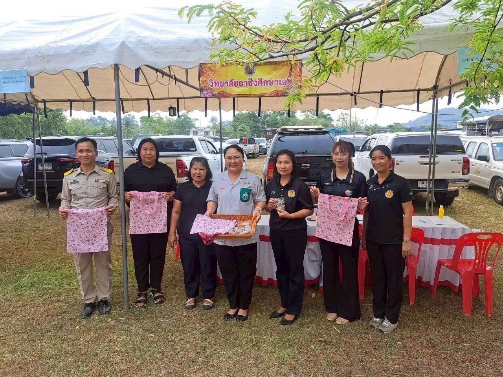
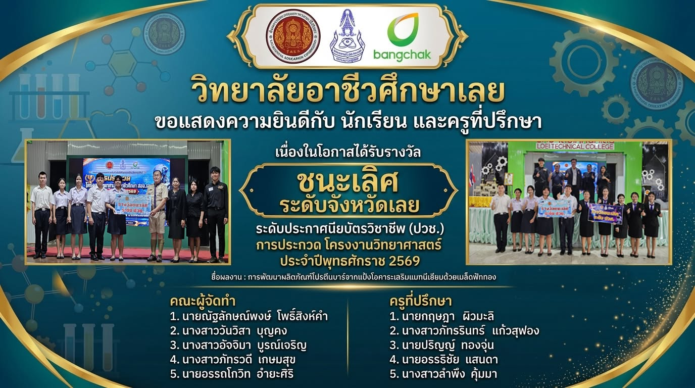
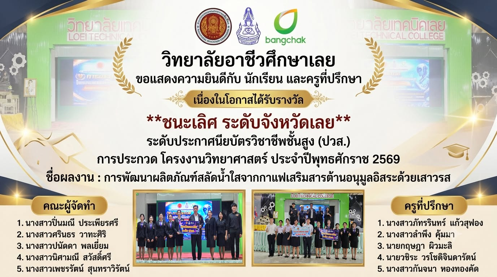

กลับไปหน้าวิทยาลัยชีวิตและเรื่องราวที่ LVCเรียนรู้ ลงมือทำ
เรียนรู้ ลงมือทำ
และเติบโตไปด้วยกัน
กิจกรรมและผลงานที่วิทยาลัยเผยแพร่
เลือกอ่านเรื่องราว พร้อมเปิดดูข้อมูลต้นฉบับ
ผลงานและความภาคภูมิใจ

นักศึกษารางวัลพระราชทาน ประจำปีการศึกษา 2568 — นางสาวศิริรัตน์ อุ่นแก้ว
ดูประกาศต้นฉบับ

ชนะเลิศระดับจังหวัดเลย การประกวดโครงงานวิทยาศาสตร์ ระดับ ปวช. ประจำปี 2569
ดูประกาศต้นฉบับ
